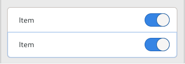
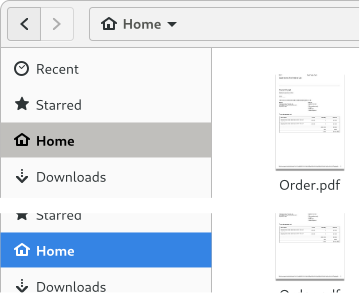
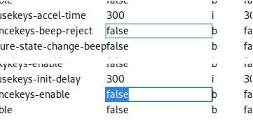

List Widget Overview [src]
GTK provides powerful widgets to display and edit lists of data. This document gives an overview over the concepts and how they work together to allow developers to implement lists.
Lists are intended to be used whenever developers want to display many objects in roughly the same way.
Lists are perfectly fine to be used for very short list of only 2 or 3 elements, but generally scale to millions of items. Of course, the larger the list grows, the more care needs to be taken to choose the right data structures to keep things running well.
Lists are meant to be used with changing data, both with the items itself changing as well as the list adding and removing items. Of course, they work just as well with static data.
Terminology
These terms are used throughout the documentation when talking about lists and you should be aware of what they refer to. These are often generic terms that have a specific meaning in this context.
Views or list widgets are the widgets that hold and manage the lists.
Examples of these widgets would be GtkListView or GtkGridView.
Views display data from a model. Models implement the GListModel
interface and can be provided in a variety of ways:
-
List model implementations for many specific types of data already exist, for example
GtkDirectoryListorGtkStringList. -
There are generic list model implementations like
GListStorethat allow building lists of arbitrary objects. -
Wrapping list models like
GtkFilterListModelorGtkSortListModelmodify, adapt or combine other models. -
Last but not least, developers are encouraged to create their own
GListModelimplementations. The interface is kept deliberately small to make this easy.
The same model can be used in multiple different views and wrapped with multiple different models at once.
The elements in a model are called items. All items are
GObject instances.
Every item in a model has a position which is the unsigned integer that describes where in the model the item is located. The first item in a model is at position 0. The position of an item can change as other items are added or removed from the model.
It is important to be aware of the difference between items and positions because the mapping from position to item is not permanent, so developers should think about whether they want to track items or positions when working with models. Oftentimes some things are really hard to do one way but very easy the other way.
The other important part of a view is a factory. Each factory is
a GtkListItemFactory implementation that takes care of mapping the
items of the model to widgets that can be shown in the view.
The way factories do this is by creating a listitem for each item that
is currently in use. List items are always GtkListItem instances.
They are only ever created by GTK and provide information about what item they
are meant to display.
Different factory implementations use various different methods to allow developers to add the right widgets to listitems and to link those widgets with the item managed by the listitem. Finding a suitable factory implementation for the data displayed, the programming language and development environment is an important task that can simplify setting up the view tremendously.
Views support selections via a selection model. A selection model is
an implementation of the GtkSelectionModel interface on top of the
GListModel interface that allows marking each item in a model as
either selected or not selected. Just like regular models, this can be implemented
either by implementing GtkSelectionModel directly or by wrapping a model with
one of the GTK models provided for this purposes, such as GtkNoSelection
or GtkSingleSelection.
The behavior of selection models - ie which items they allow selecting and
what effect this has on other items - is completely up to the selection model.
As such, single-selections, multi-selections or sharing selection state between
different selection models and/or views is possible. The selection state of an
item is exposed in the listitem via the GtkListItem:selected property.
Views and listitems also support activation. Activation means that double
clicking or pressing enter while inside a focused row will cause the view
to emit a signal such as GtkListView::activate. This provides an
easy way to set up lists, but can also be turned off on listitems if undesired.
Both selections and activation are supported among other things via widget
actions. This allows developers to add widgets to their
lists that cause selections to change or to trigger activation via the
GtkActionable interface. For a list of all supported actions
see the relevant documentation.
Behind the scenes
While it is not a problem for short lists to instantiate widgets for every item in the model, once lists grow to thousands or millions of elements, this gets less feasible. Because of this, the views only create a limited amount of listitems and recycle them by binding them to new items. In general, views try to keep listitems available only for the items that can actually be seen on screen.
While this behavior allows views to scale effortlessly to huge lists, it has a few implications for what can be done with views. For example, it is not possible to query a view for a listitem used for a certain position - there might not be one and even if there is, that listitem might soon be recycled for a new position.
It is also important that developers save state they care about in the item and do not rely on the widgets they created as those widgets can be recycled for a new position at any time causing any state to be lost.
Another important requirement for views is that they need to know which items
are not visible so they can be recycled. Views achieve that by implementing
the GtkScrollable interface and expecting to be placed directly into
a GtkScrolledWindow.
Of course, if you are only using models with few items, this is not important
and you can treat views like any other widget. But if you use large lists and
your performance suffers, you should be aware of this. Views also allow tuning
the number of listitems they create such as with gtk_grid_view_set_max_columns(),
and developers running into performance problems should definitely study the
tradeoffs of those and experiment with them.
Choosing the right model
GTK offers a wide variety of wrapping models which change or supplement an
existing model (or models) in some way. But when it comes to storing your
actual data, there are only a few ready-made choices available:
GListStore, GtkStringList, and GtkDirectoryList.
GListStore is backed by a balanced tree and has performance characteristics
that are expected for that data structure. It works reasonably well for dataset
sizes in the 1,000,000 range, and can handle insertions and deletions. It uses
a cached iter to make linear access to the items fast.
GtkStringList is not a general store - it can only handle strings. It is
backed by an dynamically allocated array and has performance characteristics
that are expected for that data structure. GtkStringList is a good fit for any
place where you would otherwise use char*[] and works best if the dataset
is not very dynamic.
GtkDirectoryList is a list model that wraps g_file_enumerate_children_async().
It presents a GListModel and fills it asynchronously with the GFiles
returned from that function.
If these models don’t fit your use case or scalability requirements, you
should make a custom GListModel implementation. It is a small interface and
not very hard to implement.
For asymptotic performance comparisons between tree- and array-based implementations, see this article.
Displaying trees
While GtkTreeView provided built-in support for trees, the list widgets, and
in particular GListModel do not. This was a design choice because the common
use case is displaying lists and not trees and it greatly simplifies the API
interface provided.
However, GTK provides functionality to make lists look and behave like trees
for use cases that require trees. This is achieved by using the
GtkTreeListModel model to flatten a tree into a list. The
GtkTreeExpander widget can then be used inside a listitem to allow
users to expand and collapse rows and provide a similar experience to
GtkTreeView.
Developers should refer to those objects’ API reference for more discussion on the topic.
List styles
One of the advantages of the new list widgets over GtkTreeView and cell
renderers is that they are styleable using GTK CSS. This provides a lot of
flexibility. The themes that ship with GTK provide a few predefined list
styles that can be used in many situations:

This rich list style is low density, spacious and uses an outline focus
ring. It is suitable for lists of controls, e.g. in preference dialogs or
settings panels. Use the .rich-list style class.

The sidebar style of list is medium density, using a full background to
indicate focus and selection. Use the .navigation-sidebar style class.

The data table style of list is a high density table, similar in style to a
traditional treeview. Individual cells can be selectable and editable. Use
the .data-table style class.
Sections
List models can optionally group their items into sections, by implementing
the GtkSectionModel interface. GtkListView can
display headers for sections, by installing a separate header factory.
Many GTK list models support section inherently, or they pass through the section of a model they are wrapping.
Comparison to GtkTreeView
Developers familiar with GtkTreeView may wonder how this way of doing lists
compares to the way they know. This section will try to outline the similarities
and differences between the two.
This new approach tries to provide roughly the same functionality as the old approach but often uses a very different way to achieve these goals.
The main difference and one of the primary reasons for this new development is that items can be displayed using regular widgets and the separate cell renderer machinery is no longer necessary. This allows all benefits that widgets provide, such as complex layout, animations and CSS styling.
The other big difference is the massive change to the data model. GtkTreeModel
was a rather complex interface for a tree data structure. GListModel is
deliberately designed to be a very simple data structure for lists only. (See
above) for how to still do trees with this new model.)
Another big change is that the new model allows for bulk changes via the
GListModel::items-changed signal while GtkTreeModel only allows a single
item to change at once. The goal here is of course to encourage implementation
of custom list models.
Another consequence of the new model is that it is now easily possible to
refer to the contents of a row in the model directly by keeping the item,
while GtkTreeRowReference was a very slow mechanism to achieve the same.
And because the items are real objects, developers can make them emit change
signals causing listitems and their children to update, which wasn’t possible
with GtkTreeModel.
The selection handling is also different. While selections used to be managed via custom code in each widget, selection state is now meant to be managed by the selection models. In particular this allows for complex use cases with specialized requirements.
Finally here’s a quick comparison chart of equivalent functionality to look for when transitioning code:
| Old | New |
|---|---|
GtkTreeModel |
GListModel |
GtkTreePath |
guint position, GtkTreeListRow |
GtkTreeIter |
guint position |
GtkTreeRowReference |
GObject item |
GtkListStore |
GListStore |
GtkTreeStore |
GtkTreeListModel, GtkTreeExpander |
GtkTreeSelection |
GtkSelectionModel |
GtkTreeViewColumn |
GtkColumnView |
GtkTreeView |
GtkListView, GtkColumnView |
GtkCellView |
GtkListItem |
GtkComboBox |
GtkDropDown |
GtkIconView |
GtkGridView |
GtkTreeSortable |
GtkColumnView |
GtkTreeModelSort |
GtkSortListModel |
GtkTreeModelFilter |
GtkFilterListModel |
GtkCellLayout |
GtkListItemFactory |
GtkCellArea |
GtkWidget |
GtkCellRenderer |
GtkWidget |